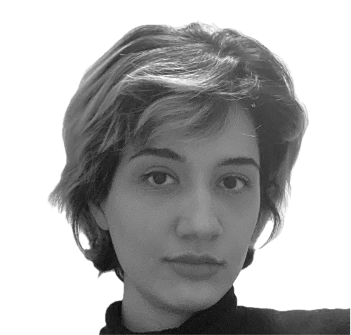
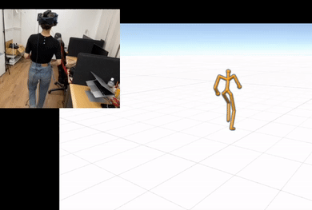
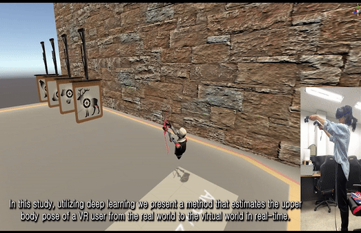
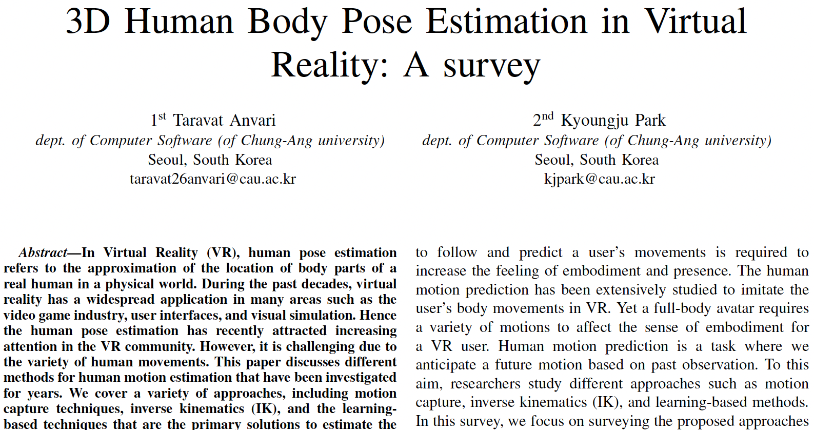

|
Taravat Anvari
Hello! :>
I am a PhD student at the AE-Lappe
under the supervision of Prof. Markus Lappe.
I am passionate about state-of-the-art technology in Pose Estimation, Virtual Reality (VR), the interaction of Vision with actions,
Machine Learning, Character Animation, and Human-computer Interaction.
Before starting my PhD, I completed my master's degree in Application Software at the Embodiment AI Lab,
Chung-Ang University, Seoul, South Korea. My research involved generating realistic body movements for virtual avatars using neural networks.
Prior to that, I pursued my B.Sc. in Computer Engineering and Information Technology under the guidance of Mehdi Haghighi.
CV /
Github /
Twitter /
Scholar /
|

|
📧 Contact and Collaboration
If you have any inquiries regarding my research or are interested in collaboration opportunities, you can reach out to me via my email.
|

|
Geometry-Incorporated Posing of a Full-Body
Avatar From Sparse Trackers
Taravat Anvari, Kyoungju Park
IEEE Access, 2023
Paper |
Code |
We leverage a propagating LSTM network and kinematic chain priors; the method produces real-time, accurate motion predictions at 130 fps, enhancing the realism of MR experiences with more natural full-body movements.
|
|

|
Upper Body Pose Estimation Using Deep Learning for a Virtual Reality Avatar
Taravat Anvari, Kyoungju Park, Ganghyun Kim
Applied Sciences, 2023
Paper |
We present a deep learning-based method for real-time upper body pose estimation in virtual reality (VR) using a convolutional neural network (CNN) trained on 3D motion capture data, designed for low-latency multi-user applications.
|
|

|
3D human body pose estimation in virtual reality: a survey
Taravat Anvari, Kyoungju Park
ICTC, 2022
Paper |
A Survey on 3D Pose Estimation
|
|